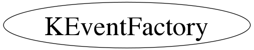

class KEventFactory
KEventFactory.cxx KDataStructure Author: Adam Cox <mailto:adam.cox@ik.fzk.de> on 5/11/10. * Copyright 2010 Karlsruhe Institute of Technology. All rights reserved. Ideally, one would use this class whenever they want to create some type of Event class that derives from KEvent. When an event class is created that derives from KEvent, the author must make sure to declare the kEventName and the kClassName for their class. See the KHLAEvent and KRawEvent source files for an example. To use this class, one simply asks the object for a new event of whatever type of even is needed. Also, the methods which produce a new event are static methods, which means an instance of a KEventFactory is not needed to use the method. KDS Developer's Note: If you want the KDataReader and KDataWriter classes to recognize your Event class, you must derive from KEvent and you must implement your class here. The KHLaMCEvent class (along with KHLAEvent and KRawEvent) is an example of this.
Function Members (Methods)
public:
| KEventFactory() | |
| KEventFactory(const KEventFactory&) | |
| virtual | ~KEventFactory() |
| static TClass* | Class() |
| virtual void | Clear(Option_t* opt) |
| static Bool_t | DeleteEvent(KEvent* event) |
| virtual TClass* | IsA() const |
| static KEvent* | NewEvent(const Char_t* type) |
| static KEvent* | NewEvent(const KEvent* event) |
| static KHLAEvent* | NewEvent(const KHLAEvent* event) |
| static KHLaMCEvent* | NewEvent(const KHLaMCEvent* event) |
| static KRawEvent* | NewEvent(const KRawEvent* event) |
| static KHLAEvent* | NewHLAEvent() |
| static KHLaMCEvent* | NewHLaMCEvent() |
| static KRawEvent* | NewRawEvent() |
| KEventFactory& | operator=(const KEventFactory&) |
| virtual void | ShowMembers(TMemberInspector& insp, char* parent) |
| virtual void | Streamer(TBuffer& b) |
| void | StreamerNVirtual(TBuffer& b) |
private:
| static void | BuildEvent(KEvent* event) |
| void | InitializeMembers() |
Class Charts
{kind=link}
{kind=link}
{kind=link}
{kind=link}

Function documentation
KEventFactory(const KEventFactory& )
void InitializeMembers(void)
WARNING - THIS METHOD SHOULD NEVER ALLOCATE SPACE FOR POINTERS ONLY SET MEMBERS ON THE STACK TO THEIR INITIAL VALUES
KHLAEvent* NewHLAEvent(void)
returns a pointer to an KHLAEvent object. You own the memory, so you must delete it.
KRawEvent* NewRawEvent(void)
returns a pointer to an KRawEvent object. You own the memory, so you must delete it.
KHLaMCEvent* NewHLaMCEvent(void)
returns a pointer to an KHLaMCEvent object. You own the memory, so you must delete it.
Bool_t DeleteEvent(KEvent* event)
can use this method to delete objects if you like. This might be useful in the future if the objects become more complicated.
void BuildEvent(KEvent* event)
KEventFactory(const KEventFactory& )
eventually, I should use the Boost libraries and make the pointers returned by this class to be shared pointers, which will then make them safer to delete. when an instance of the factory is destroyed, it will attempt to delete all of the events that it created unless another client is using it. then it won't delete it. when that client wants to delete the event they will call KEventFactory::DeleteEvent(KEvent*); or just let it go out of scope Constructors